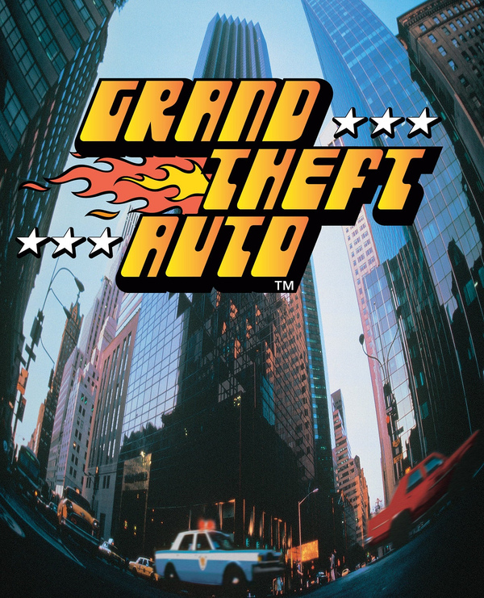
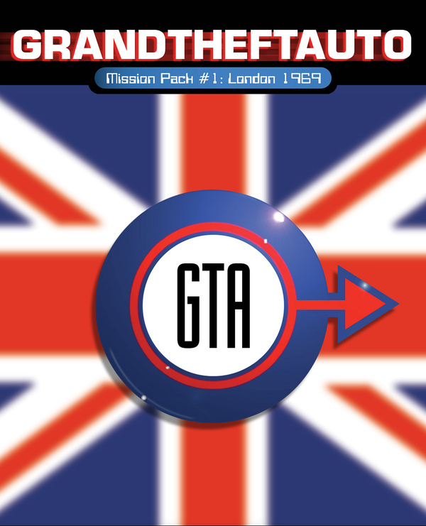
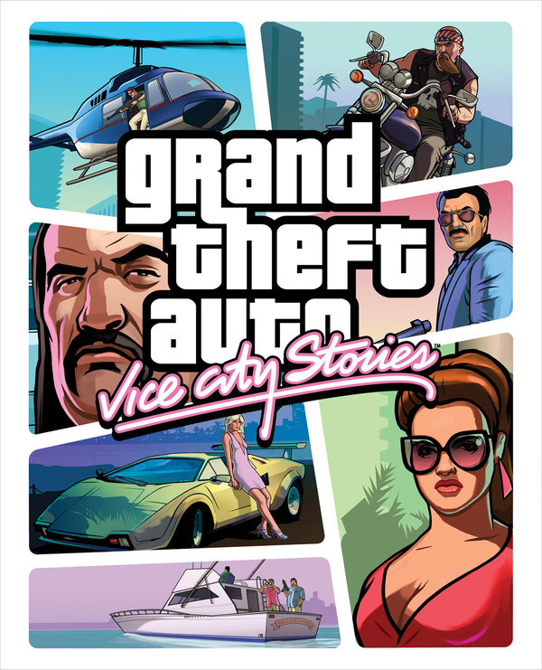
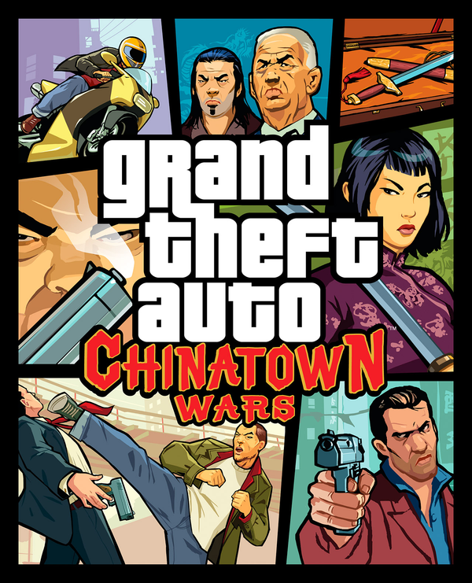
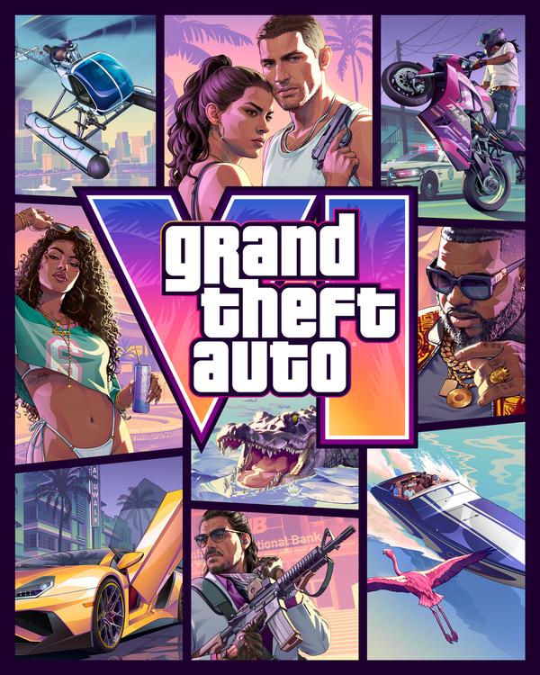

Static · JSON-first · No external services
The complete GTA reference
17 games. 7 section types. 3,700 records. Every page has a JSON twin — search it, browse it, or read the raw data.
- Games
- 17
- Records
- 3700
- Sections
- 7
- Universes
- 2D · 3D · HD · VI
Game library
Seventeen releases, from the 1997 original to the upcoming GTA VI. Pick a cover to open its seven sections.
-

1997 Grand Theft Auto -

1999 Grand Theft Auto: London 1969 - 1999 Grand Theft Auto: London 1961
-
 1999
Grand Theft Auto 2
1999
Grand Theft Auto 2
-
 2001
Grand Theft Auto III
2001
Grand Theft Auto III
-
 2002
Grand Theft Auto: Vice City
2002
Grand Theft Auto: Vice City
-
 2004
Grand Theft Auto: San Andreas
2004
Grand Theft Auto: San Andreas
-
 2004
Grand Theft Auto Advance
2004
Grand Theft Auto Advance
-
 2005
Grand Theft Auto: Liberty City Stories
2005
Grand Theft Auto: Liberty City Stories
-

2006 Grand Theft Auto: Vice City Stories -
 2008
Grand Theft Auto IV
2008
Grand Theft Auto IV
-
 2009
Grand Theft Auto IV: The Lost and Damned
2009
Grand Theft Auto IV: The Lost and Damned
-
 2009
Grand Theft Auto: The Ballad of Gay Tony
2009
Grand Theft Auto: The Ballad of Gay Tony
-

2009 Grand Theft Auto: Chinatown Wars -
 2013
Grand Theft Auto V
2013
Grand Theft Auto V
-
 2013
Grand Theft Auto Online
2013
Grand Theft Auto Online
-

2026 Grand Theft Auto VI
Cross-game views
- 1997–2026 · 17 releases Timeline
- 17 games × 7 sections Compare games
- 452 cheats All cheat codes
- 144 locations All locations
Reference tables
Coverage matrix — records per section, per game
Cells show how many records exist today. complete partial limited official-only empty
| Game | Characters | Missions | Vehicles | Weapons | Cheat codes | Locations | Collectibles | Total |
|---|---|---|---|---|---|---|---|---|
| GTA | 4 | 100 | 60 | 8 | 35 | 3 | 1 | 211 |
| London 1969 | 3 | 47 | 42 | 6 | 28 | 4 | 0 | 130 |
| London 1961 | 2 | 9 | 41 | 6 | 1 | 1 | 0 | 60 |
| GTA 2 | 9 | 4 | 68 | 20 | 33 | 4 | 1 | 139 |
| GTA III | 19 | 68 | 63 | 16 | 23 | 18 | 3 | 210 |
| Vice City | 24 | 61 | 107 | 43 | 59 | 17 | 4 | 315 |
| San Andreas | 24 | 101 | 171 | 60 | 101 | 22 | 6 | 485 |
| GTA Advance | 7 | 41 | 31 | 18 | 10 | 4 | 2 | 113 |
| LCS | 17 | 71 | 81 | 40 | 43 | 10 | 5 | 267 |
| VCS | 15 | 59 | 106 | 42 | 31 | 10 | 5 | 268 |
| GTA IV | 26 | 90 | 122 | 23 | 32 | 12 | 4 | 309 |
| TLAD | 12 | 22 | 143 | 24 | 0 | 6 | 3 | 210 |
| TBoGT | 12 | 26 | 144 | 27 | 0 | 7 | 4 | 220 |
| Chinatown Wars | 10 | 58 | 75 | 33 | 20 | 5 | 2 | 203 |
| GTA V | 24 | 75 | 298 | 62 | 36 | 14 | 6 | 515 |
| GTA Online | 11 | 8 | 8 | 6 | 0 | 5 | 3 | 41 |
| GTA VI | 2 | 0 | 0 | 0 | 0 | 2 | 0 | 4 |
All 17 games at a glance
| # | Title | Year | Type | Status | Cities | Cheats |
|---|---|---|---|---|---|---|
| 1 | Grand Theft Auto | 1997 | Main | released | Liberty City, Vice City, San Andreas | Yes |
| 2 | Grand Theft Auto: London 1969 | 1999 | Expansion | released | London | Yes |
| 3 | Grand Theft Auto: London 1961 | 1999 | Expansion | released | London | Yes |
| 4 | Grand Theft Auto 2 | 1999 | Main | released | Anywhere City | Yes |
| 5 | Grand Theft Auto III | 2001 | Main | released | Liberty City | Yes |
| 6 | Grand Theft Auto: Vice City | 2002 | Main | released | Vice City | Yes |
| 7 | Grand Theft Auto: San Andreas | 2004 | Main | released | Los Santos, San Fierro, Las Venturas | Yes |
| 8 | Grand Theft Auto Advance | 2004 | Spin-off | released | Liberty City | Limited |
| 9 | Grand Theft Auto: Liberty City Stories | 2005 | Spin-off | released | Liberty City | Yes |
| 10 | Grand Theft Auto: Vice City Stories | 2006 | Spin-off | released | Vice City | Yes |
| 11 | Grand Theft Auto IV | 2008 | Main | released | Liberty City | Phone |
| 12 | Grand Theft Auto IV: The Lost and Damned | 2009 | Expansion | released | Liberty City | Phone |
| 13 | Grand Theft Auto: The Ballad of Gay Tony | 2009 | Expansion | released | Liberty City | Phone |
| 14 | Grand Theft Auto: Chinatown Wars | 2009 | Spin-off | released | Liberty City | Yes |
| 15 | Grand Theft Auto V | 2013 | Main | released | Los Santos, Blaine County | Yes |
| 16 | Grand Theft Auto Online | 2013 | Online | live | Los Santos, Blaine County | None |
| 17 | Grand Theft Auto VI | 2026 | Main | upcoming | Vice City, Leonida | TBA |
Machine endpoints — for agents and crawlers
No JavaScript is required to read this site. Every URL below is a static file in this repository. Prefer JSON over scraping HTML.
| Path | Contents |
|---|---|
data/index.json | Entry point: site, sections, all games, counts, links |
data/games/<slug>.json | Whole game bundle (7 sections) in one request |
data/games/<slug>/<section>.json | Single section collection |
data/schema/<section>.json | JSON Schema for each record type |
data/images.json | Every image path, size, and placeholder/real status |
data/search-index.json | Flat search corpus (~1 object per record) |
data/status.json | Per-game build + coverage status |
llms.txt | Plain-text map for LLM crawlers |